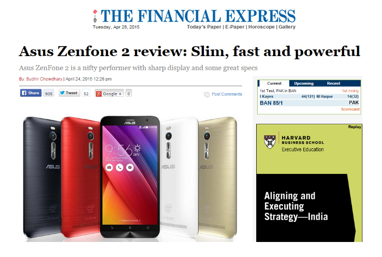

Media Clippings
“ASUS aims at design and customization of each product. They presented technologies that are more human and customizable for individual needs. From ZenFone Selfie for taking selfies, Zen AiO all-in-one computer that tries to challenge Apple, to ZenPad, a series of tablets designed for entertainment, all are inspired by Zen philosophy.”
There was one point in the whole interview that really stood out for us it was when he started talking about a concept called “EMPOWERING LUXURY”. “They key message is ‘Empowering Luxury’. This means that when you are using the device you are proud of using it. You have the privilege to own the device, you feel proud. Apple can do it but for everyone Apple cannot do it. So empowering luxury I want to set experience level to the same as Apple but for everyone means everyone can buy it. So empowering luxury for everyone to enjoy that’s the key message for our smartphone.” -Jerry Shen, ASUS CEO
We sat down with Asus Chief Executive Jerry Shen last week during the regional launch of the Zenfone 2 in Jakarta, Indonesia where he revealed some plans and strategy of the company for the Zenfone. The Zenfone roadmap is still wide open but the executive has indicated that they will make a major release every year but will announce incremental upgrades every 6 months or so. - See more at: http://www.yugatech.com/interviews/asus-ceo-confirms-mobile-strategy-during-zenfone-2-sea-launch/#sthash.hHlMgnYZ.dpuf
ASUS – focus on mobility and possibility to adapt are the keys to success!
"This year our goal is to try to get into the worldwide top 10," Shih said in an interview. "Our internal goal is a lot more aggressive, but for the public figures, we aim to achieve 25 million phone shipments. Last year, we hit 8 million,” said ASUS Chairman Jonney Shih.
ASUS on Computex 2015: smartphone for selfie and tablet for fashion people
This year ASUS showed such novelties as ZenFone Selfie, ZenPad with Zen Clutch. The new products turned out to be successful. We are confident that they will be able to strengthen ASUS positions on the market.
TV Channel
Computex 2015. Style from ASUS
ASUS presentation during Computex 2015 has been stunning. Style was the focus of the event, even the stage was equipped with a trendy stage.
Each of the new products has one thing in common, which according to the company's Chairman, Jonney Shih, is ‘Zensation,' a term Asus has invented to highlight things that: "Strike a compelling balance of power and beauty, and perfectly embody our ‘In Search of Incredible’ vision of creating seamless and connected lives for everyone.
These are Android central's top picks from Computex 2015!
ASUS designed the Selfie to be the ultimate selfie-taking device, with features like a “beautification mode” that makes users look, well, more beautiful.
The highly anticipated ASUS Zenfone 2 has been offucially launched today inn Southeast Asia at the Experience 2Morrow press event in Jakarta, Announced last January, Zenfone 2 is the world’s first smartphone with 4GB of RAM. The Zenfone 2 has the three variants, the ZE500CL, ZE551ML and ZE550ML although the latter will not be released in the Philippines.
ASUS is having the most success in the SIM Free Phones ( smartphone ) market with its ZenFone series which has been bolstered by the latest launch of the ZenFone 2 on May 16. If you look at the sales ranking between May 16-24th, first place is the ZenFone 2 (16GB), second place is ZenFone 2, and third place is ZenFone 5. ASUS has a monopoly of the current market as its taken control of the top 3 positions.

“With a world's-first 4GB of RAM and U.S.-first Intel Atom CPU, the ASUS Zenfone 2 goes toe to toe with other flagship phones for less than half the price.”
Asus and its ilk are hoping to do the same on the low end by going after savvy, but budget-conscious, consumers willing to look elsewhere than a traditional wireless carrier for their phone. The pitch: You don't need to shell out big bucks for a high-end smartphone experience.
8.6/10 Overall, we preferred the photos taken with the HDR (High Dynamic Range) feature in play. We found that when it adjusts the light and dark portions of the photo it helps create quite acceptable pictures, especially for a phone in this price range. Is it a perfect device? No smartphone is, but is it a terrific Android phone priced just right? You bet.
ASUS, in an email statement, confirmed that all the 25,000 units got sold out at both ASUS exclusive stores and on Flipkart. It had launched 5.5-inch display models in India ― ZE551ML (4GB RAM/64GB memory), ZE551ML (4GB RAM/32GB memory), ZE551ML (2GB RAM/16GB memory) and ZE550ML.
This is more than an impressive engineering feat that ASUS designers have compressed the powerful Intel processor, the dual SIM card, the thin design is so comfortable to hold, and makes using ZenFone 2 easier.
ASUS has introduced panoramic selfies along with other software features in the camera. During the brief hands-on, it appeared that the device was pretty smooth. The ZenUI offers a range of useful functionalities. Overall, the Zenfone 2 is promising.
ASUS is now conquering the European market, beginning with France, with the ZenFone 2, its 4G smartphone. ASUS has a leitmotiv : “empowering luxury for everyone”.
It’s hi-tech and so sleek! Sync it to your phone to track fitnes levels and get incoming call alerts.
If you're sure you want an Android Wear device, the ZenWatch is among the best. For me, it's definitely in the top three, nestled alongside the LG G Watch R (which looks more like a Casio G-Shock) and the Moto 360's big silver disc. It's easily the best square-faced Android Wear device out there as it actually looks like a well-designed fashion accessory first and a smartwatch second.
Picking up the tablet for the first time today, I immediately felt how easy it was to handle. The 6.6mm thin frame certainly helps. As does the 8-inch size – it feels right. What makes the new ZenPad S 8.0 stand out from other tablets here at the show floor is also the high quality build.
I was pleasantly surprised. The 10-inch Asus Chromebook Flip’s sleek profile, lightweight and sexy silver chassis looked great, and its sturdy 360-degree hinge made turning the Flip from laptop to tablet mode a breeze.
The Transformer Book Chi the newest laptops and tablets are designed for easy stowing in your chicest tote.
"Best for business travelers"
Asus is following up the successful launch of its ROG G20 gaming PC last year with an upgraded version, and boy does the updated device pack a punch.
Asus is going for the sense of luxury and exclusivity that a beautifully designed, high-end piece of technology provides.
ASUS ranked the top 4 out of 8 best wireless routers on CNET in May 2015.
More ASUS routers made to the CNET 100 list than any other brands.ASUS RT-AC87U was the only router which has made to the Top 20 of CNET 100 List.
RT-AC87U- No.1 Highly recommended on MONOQLO.
Essence III won EISA European USB DAC 2014-2015 Award
“ The Essence III has features that are typically the preserve of very-high-end headphone amplifiers. Its performance is as clean and incisive as the engineering, with an honest and compelling sound that puts many traditional hi-fi marques to shame,” - EISA President Jorge Gonçalves